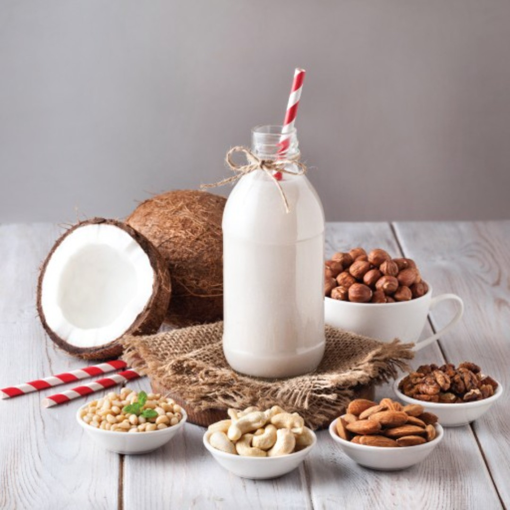
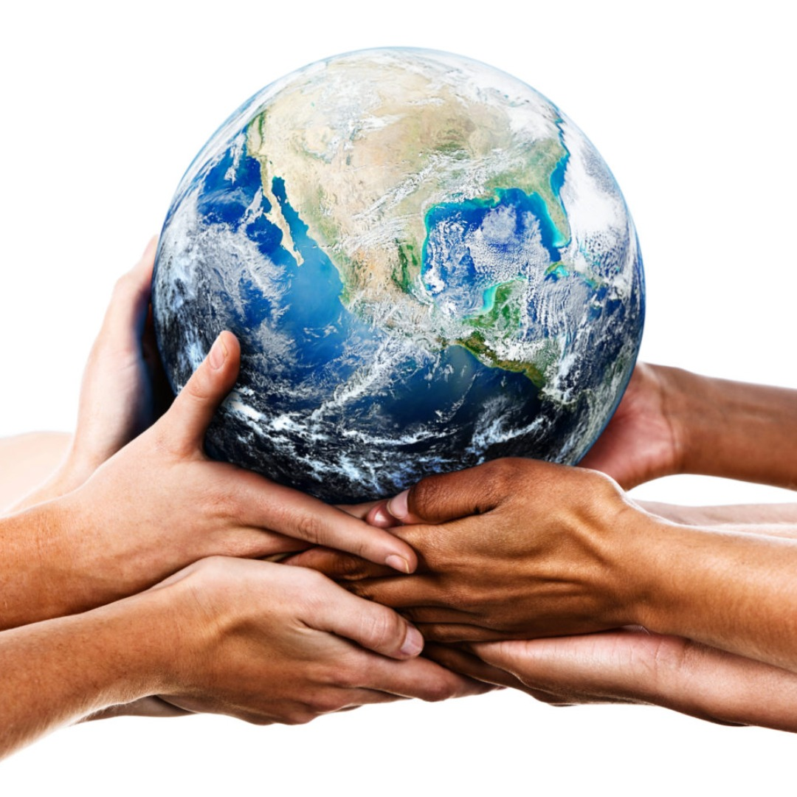
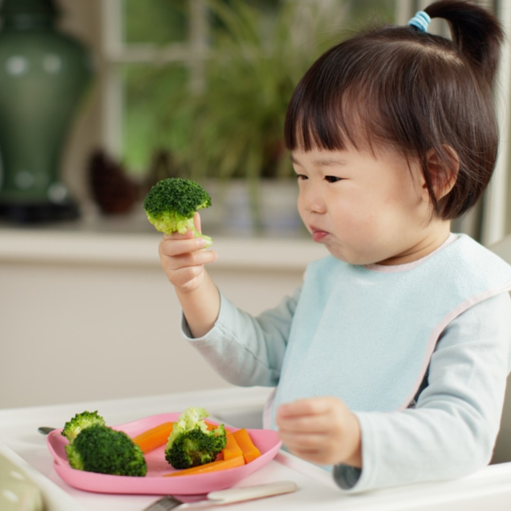
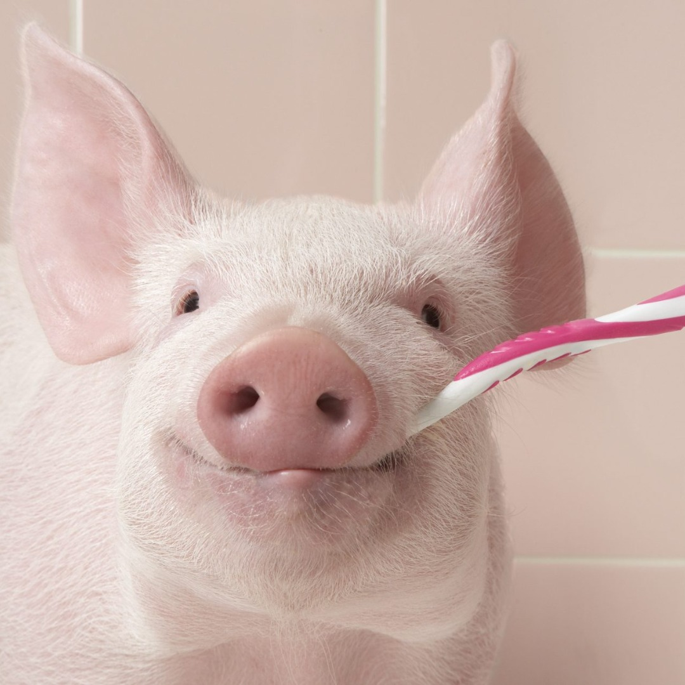
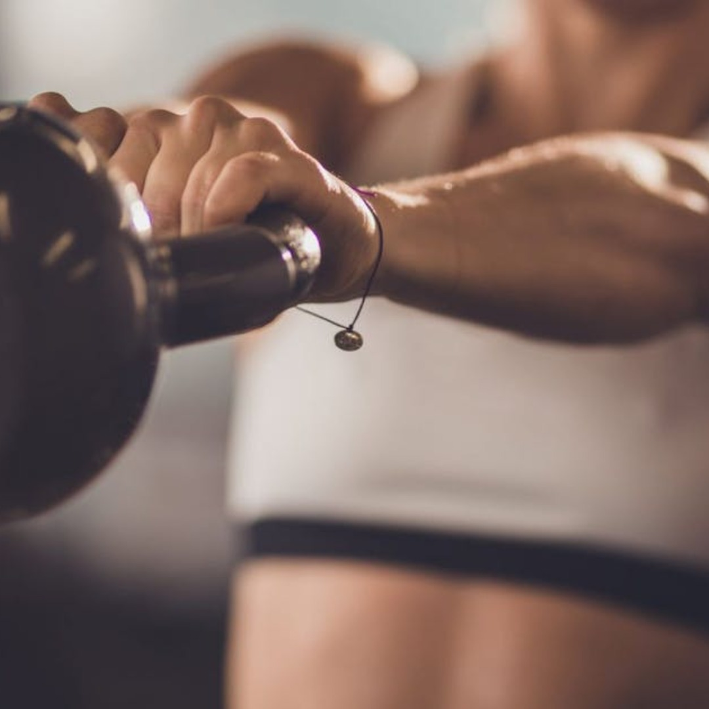
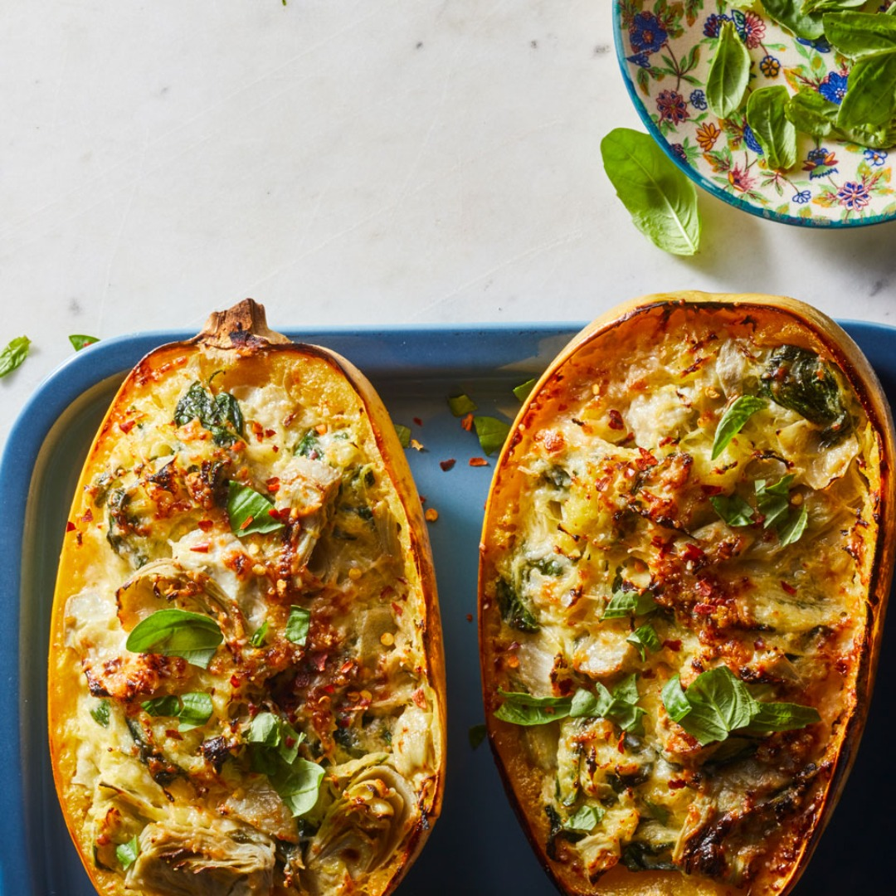

7 INFLAMATION REDUCING
VEGAN FOOD GROUPS
The dietary choices you make every day give you the possibility to become healthier.
Remember that a healthy body that has lots of energy showcases the absence of inflammation, so eat up these
seven nutrient-dense food groups to bring you back to
brilliant!

Can vegan milk get any better?
Can vegan milk get any better?
Danon thinks it can!

Vegan diet could be the “single biggest way” to reduce your environmental impact on earth

These 6 tips will help your children to eat more vegetables

Is a vegan world even possible?

5 myths about strength-training
5 myths about strength-training
for vegans

These 10 vegan recipes will inspire your family to try more vegan meals
Lewis Hamilton shares
his plant-based daily diet and how it made him more successful